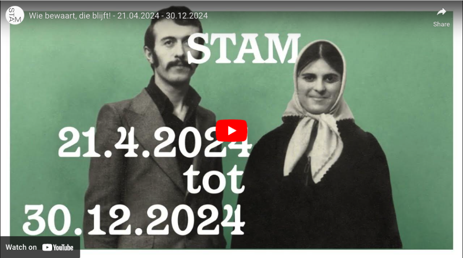

Zestig jaar geleden kwam de Turkse migratie naar Gent op gang. Vandaag heeft bijna een tiende van de Gentenaren Turkse roots. Jongeren uit de Turkse diaspora gingen op zoek naar de verhalen, voorwerpen en betekenissen achter die cijfers. 'Wie bewaart, die blijft! Koru ve yaşat!', een sneak peek van een groeiende Gents-Turkse erfgoedcollectie.
Wat moeten we uit de voorbije decennia van Turkse migratie naar Gent bewaren voor de toekomstige generaties Gentenaren? Die vraag staat centraal in het Gents-Turks Erfgoedtraject, een project getrokken door jongeren met Turkse roots. Het afgelopen jaar zochten ze voorwerpen, betekenissen en verhalen die verband houden met de Turkse migratie naar Gent en gingen ze te rade bij grootouders, ouders en kennissen.
Wat ze vonden aan erfgoed en erfenissen selecteerden ze voor een nieuwe Gents-Turkse erfgoedcollectie. Benieuwd naar de eerste vondsten van dit traject? 'Wie bewaart, die blijft! Koru ve yaşat!' biedt een sneak peek van de jonge collectie en geeft een idee in welke richting deze collectie zal evolueren.